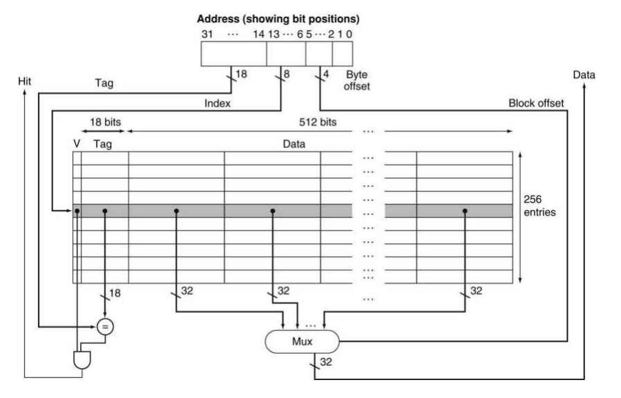

Data Access Process

L1I Cache Access Process
Inst Access
fetch()
m_L1I->access() -> m_miss_queue -> m_memport = m_inct
m_inct = shader_memory_interface(m_gpc)
icnt_inject_request_packet()
::icnt_push()
Inst Response
icnt_cycle()
accept_fetch_response()
m_L1I->fill(mf)
L1D Cache Access Process
Data Access
execute()
Data Response
icnt_cycle()
accept_ldst_unit_response()
m_ldst_unit->fill(mf)
m_response_fifo
execute()->m_fu[ldst]-cycle()
L1D->fill()